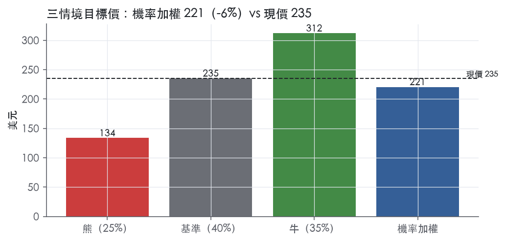
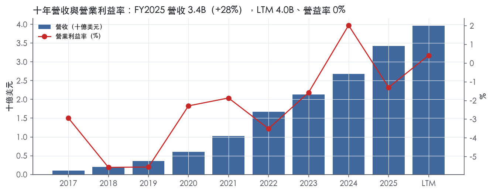
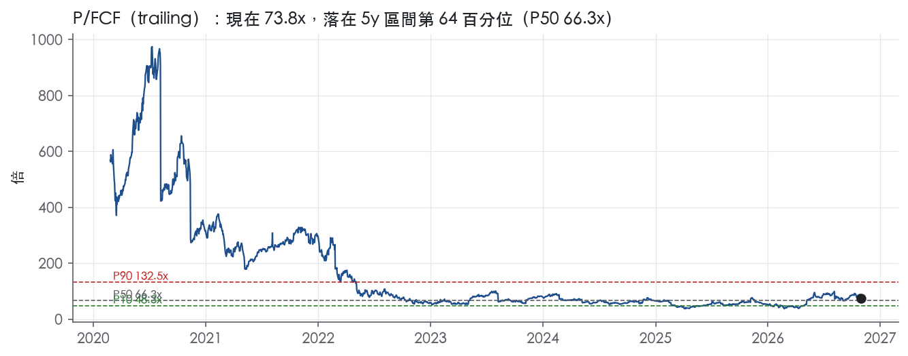
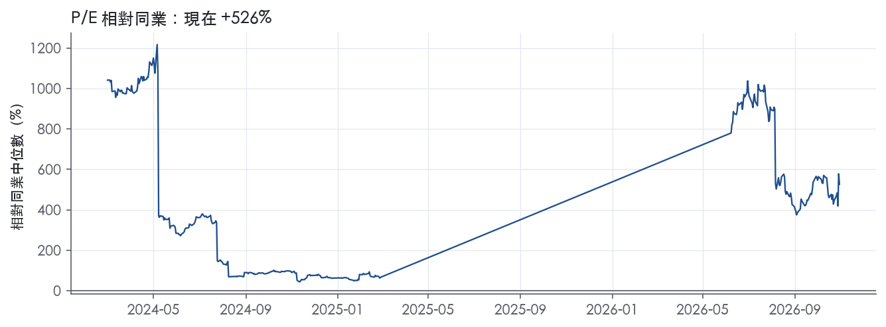
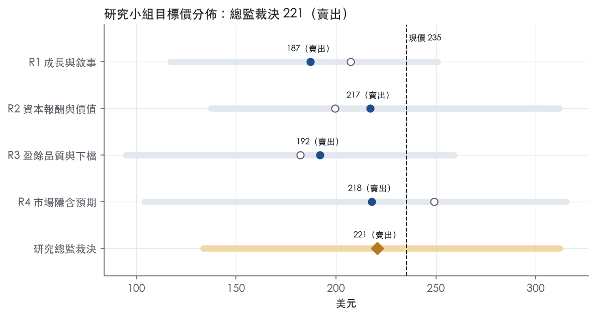
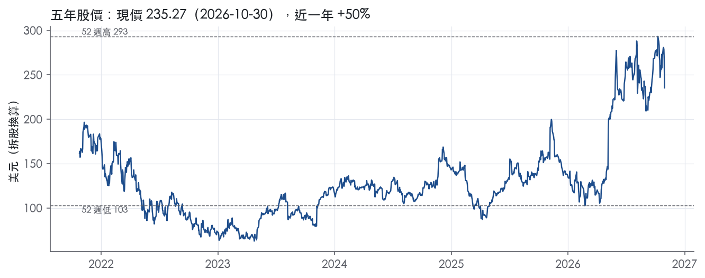

評等總表 › 資訊科技 › DDOG
口徑校正幅度收斂後仍約當持平，中性｜評等 賣出｜目標價 221
| 報告日 | 評等 | 目標價 | 當時股價 | 超額報酬 |
|---|---|---|---|---|
| 2026-10-30 | 賣出 | 221 | 235 | -16.2% |
| 評等 | 賣出（邊界，鄰近減碼） |
| 12 個月目標價 | 221 美元 |
| 現價 | 235.27 美元（2026-10-30） |
| 預期報酬 | 股價 -6.2%＋股息 0.0%＝總報酬 -6.2%；同業籃門檻 10.0%，超額 -16.2% |
| 估值方法 | P/FCF 66.0x，套在第 5–8 季的自由現金流（也就是一年後的未來四季） |
| 三情境 | 熊 134／基準 235／牛 312 |
| 研究流程 | 四位研究員兩輪辯論＋研究總監裁決 |
| 資料來源 | SEC EDGAR XBRL、Tiingo、FRED（全免費） |
口徑校正幅度收斂後仍約當持平，中性（研究總監裁決，四位研究員兩輪辯論後）
評等 賣出（邊界，鄰近減碼）｜12 個月目標價 221 美元（總監三情境機率加權 237 與研究員中位數 205 各半）｜現價 235.27（2026-10-30）
預期報酬：股價 -6.2%＋股息 0.0%＝總報酬 -6.2%。同業籃門檻 10.0%，超額 -16.2%，離減碼的分界不到三個百分點，屬邊界評等（落在其他級距的機率約四成）。
估值方法：P/FCF 66.0x，套在第 5–8 季的自由現金流（也就是一年後的未來四季）。三情境：熊 134（25%）／基準 235（40%）／牛 312（35%）。
立場中性而評等賣出：評等看的是「預期總報酬 -6.2% − 同業籃門檻 10.0%」＝超額 -16.2%，不是絕對漲跌；中性但超額偏離門檻，代表情境機率或股利把報酬推離門檻。
評等說明：研究總監自己的機率加權目標價 237 美元對應「減碼」；與研究員第二輪中位數 205 美元各半後為 221 美元，落入「賣出」。兩者只差一級，請把這檔讀成「減碼～賣出」，正文裡總監的立場文字以「減碼」寫成。
什麼會讓研究總監改變看法：Q3 營收低於指引上緣或 10-K 顯示 AI 原生客群貢獻轉負，基準改用 R3 的 19% 與 3 年 P10 同比例的倍數、轉空；Q3 10-Q 顯示利息收入加遞延收入流入合計低於營收 3%（假設），口徑換算撤回、倍數回到研究員的 60x 附近；若合計高於營收 6%，換算比例回到四分之三、倍數回到 70x。
| 過去四季（實際，FY2026Q2） | 未來四季 | 第 5–8 季 | 第 9–12 季 | |
|---|---|---|---|---|
| 營收（B） | 4.0B | 5.1B | 6.2B | 7.2B |
| 營收成長 | 31.5% | 29.0% | 21.0% | 16.0% |
| 營業利益率 | 0.4% | 1.0% | 2.5% | 4.0% |
| EPS（美元） | 0.50 | 0.09 | 0.33 | 0.61 |
| EPS 成長 | 43.5% | -81.2% | 248.6% | 86.0% |
| 每股股息（美元） | — | 0.00 | 0.00 | 0.00 |
| P/E（現價） | 472.3x | 2506.0x | 719.0x | 386.5x |
| 股息殖利率（現價） | — | — | — | — |
過去四季為申報數字；預測為研究總監的假設、程式計算。倍數與殖利率都用現價計算，用來看現價對應各期獲利的高低。
| 情境 | 機率（歷史） | 故事 | 未來四季營收成長 | 第 5–8 季營益率 | 倍數 | 目標價 | 股價漲跌 |
|---|---|---|---|---|---|---|---|
| 熊 | 25%（23%） | 風險表第 1 條最大客戶自 FY2026Q4 起優化，疊加第 5 條 IT 支出收斂（本行下行路徑）與第 3 條倍數重定價，倍數依 2022–23 trailing 回 3 年 P10 的同比例壓縮，再依收斂後的口徑比例換算 | 20.0% | -2.5% | 50.0x | 134 | -43.2% |
| 基準 | 40%（40%） | Q3–Q4 續超指引，2027 下半年高基期與 AI 原生客群貢獻遞減使 Q5–Q8 降到 21%，前瞻倍數回到自家中位數換算後的區間中點 | 29.0% | 2.5% | 66.0x | 235 | -0.0% |
| 牛 | 35%（37%） | AI 工作負載進入生產、Bits AI 與安全交叉銷售使成長僅小幅降檔至 27%，倍數自市場持平參考 84.1x 小幅壓縮（假設給基準壓縮幅度的約一半），不假設擴張 | 32.0% | 3.0% | 80.0x | 312 | 32.6% |
目標價由程式依研究總監的驅動與倍數計算；機率由研究總監給定。括號內是歷史頻率：把這檔股票過去十年 12 個月報酬的波動形狀，置中在基準情境，結果落在各情境附近的比例。

四位研究員用不同方法各自估值，回應研究總監的質疑後交出第二輪，最後由總監逐點裁決。各研究員的主張見第七章，裁決理由見第八章，完整論證見《研究底稿》。
| 立場（一輪→二輪） | 加權目標價（一輪→二輪） | 評等（一輪→二輪） | 第二輪倍數 | 熊～牛目標價 | |
|---|---|---|---|---|---|
| R1 成長與敘事 | 中性→看空 | 207→187 | 賣出→賣出 | 64.0x | 117～251 |
| R2 資本報酬與價值 | 看空→看空 | 199→217 | 賣出→賣出 | 61.0x | 137～312 |
| R3 盈餘品質與下檔 | 看空→看空 | 182→192 | 賣出→賣出 | 58.0x | 95～259 |
| R4 市場隱含預期 | 中性→看空 | 249→218 | 中立→賣出 | 60.0x | 104～315 |
| 研究總監裁決 | 中性 | 221 | 賣出 | 66.0x | 134～312 |
目標價由程式依各自的驅動與倍數計算；評等＝機率加權總報酬 − 同業籃門檻。
Datadog 是一家雲端原生的觀測（observability）與安全平台廠商，把基礎設施監控、應用效能管理（APM）、日誌管理、安全等多個傳統產品類別整合進單一 SaaS 平台。公司自我定位為「the leading AI-powered observability and security platform」，將應用程式、基礎設施、資料、模型與安全整合在一個平台上，用 AI 在問題影響客戶之前偵測並解決¹。客戶涵蓋從小型新創到 Fortune 500 企業，公司特別強調「trusted globally by Fortune 500 companies and high-growth AI leaders」¹。公司採訂閱制商業模式，合約以月約與年約為主，部分為季約、半年約與多年約²。FY2025 營收 3.43B，年增 27.7%，LTM 營收已達 3.97B，規模持續擴大。
Datadog 未採傳統事業分部揭露，10-K 以單一可報導分部呈現整合平台；公司以產品線／使用案例描述業務組成，核心包括基礎設施監控、APM、日誌管理、雲端監控，以及近年快速擴張的 AI 與安全相關產品²。10-K 指出公司目前提供超過 1,000 個現成整合（out-of-the-box integrations）協助客戶部署²。近兩季新聞稿顯示產品擴張明顯集中在 AI 可觀測性與安全：FY2026Q1 推出 MCP Server、Bits AI Security Agent、GPU Monitoring、Experiments 等新產品並宣布正式上市³；FY2026Q2 在 DASH 2026 大會上一次推出逾 100 項新功能，並正式發布 Bits Code、Bits Chat、Bits Agent Builder¹。各產品線對總營收的具體佔比，10-K 未揭露。公司在 FY2026Q2 收購 Adaptive ML，一家開發「world's first Reinforcement Learning Operations platform」的前沿 AI 新創，以強化 Datadog AI Research 在世界模型與代理型 LLM 後訓練上的投資¹。從財務結構看，FY2025 毛利率 80.0%維持軟體業高檔水準，但營益率僅 -1.3%，反映公司持續加碼銷售、研發與併購投入，犧牲短期獲利換取滲透率。
客戶策略上，公司正從中小型客戶往大型企業客戶遷移，銷售週期因此拉長、單筆合約金額提高但不確定性也增加²。10-K 特別提到大型企業客戶往往先小規模試用產品，但仍要求客製化設定、整合服務與價格談判，公司須先投入大量銷售資源卻無法保證客戶日後會全面擴大部署²。$100K+ ARR 大型客戶數是公司揭露的核心指標：FY2026Q1 約 4,550 家，較去年同期約 3,770 家成長 21%³；FY2026Q2 進一步增至約 4,720 家，較去年同期約 3,850 家成長 23%¹，顯示大客戶滲透持續加速。通路上，公司主要透過直接銷售團隊觸達企業客戶，同時也允許雲端服務供應商（如 AWS、GCP、Azure）在其客戶市集中直接銷售 Datadog 方案，但此通路可能稀釋直接客戶關係並壓縮利潤率²。地區布局方面，10-K 未揭露具體營收地區佔比，但明確提及正擴張國際銷售團隊與行銷資源²；日系市場合作上，公司在 FY2026Q1 與 Sakana AI 建立戰略夥伴關係，先服務日本大型企業客戶再逐步全球化³。公司也取得 FedRAMP High 認證，強化對美國聯邦政府及其承包商客戶的滲透能力³。
FY2025Q3 營收 0.89B，年增 28.4%（fact.revenue/growth.FY2025Q3），毛利率 80.1%，營益率回升至 -0.7%，成長動能持續加速。FY2025Q4 營收 0.95B，年增 29.2%，毛利率 80.4%，營益率轉正至 1.0%，FCF 達 0.32B（is/），全年營收成長率拉高到近三成。FY2026Q1 營收 1,006M，年增 32%，GAAP 營業利益 7M（GAAP 營業利益率 1%），Non-GAAP 營業利益 223M（Non-GAAP 營業利益率 22%），GAAP 稀釋每股盈餘 0.15 美元、Non-GAAP 0.60 美元，營運現金流 335M、自由現金流 289M，期末現金及約當現金與有價證券 4.8B 美元³。公司當時給出 Q2 指引：營收 1.07B–1.08B 美元，Non-GAAP 營業利益 225M–235M 美元，Non-GAAP 每股盈餘 0.57–0.59 美元（約 3.69 億稀釋股數）³；全年指引營收 4.30B–4.34B 美元，Non-GAAP 營業利益 940M–980M 美元，Non-GAAP 每股盈餘 2.36–2.44 美元³。FY2026Q2 營收 1.12B 美元，年增 36%，GAAP 營業利益 5M 美元（營業利益率 0%），Non-GAAP 營業利益 257M 美元（營業利益率 23%），GAAP 稀釋每股盈餘 0.12 美元、Non-GAAP 0.65 美元，營運現金流 316M 美元、自由現金流 279M 美元，期末現金及約當現金與有價證券達 5.0B 美元¹，實際表現優於公司先前給出的 Q2 指引區間。公司同時釋出 Q3 指引：營收 1.135B–1.145B 美元，Non-GAAP 營業利益 260M–270M 美元，Non-GAAP 每股盈餘 0.63–0.65 美元（約 3.78 億稀釋股數）¹；全年指引上調為營收 4.45B–4.47B 美元，Non-GAAP 營業利益 1.01B–1.03B 美元，Non-GAAP 每股盈餘 2.50–2.54 美元¹。四季趨勢清楚：營收年增率從 Q3 的 28% 一路加速到 Q2 的 36%，GAAP 營益率雖仍在 0–1% 區間徘徊，但 Non-GAAP 營益率穩定在 22–23%，自由現金流維持在 2.5–3 億美元量級。
CEO Olivier Pomel 將近兩季的成長歸因於客戶的 AI 部署熱潮："Our customers are building and deploying with AI, and they are using the Datadog platform to observe, secure, and act on their AI-enabled solutions."¹他並表示要「innovating rapidly to help our customers manage rising complexity, and increasingly build autonomy into their operations」¹。10-K 指出公司預期將持續把大量財務與其他資源投入技術基礎架構、銷售與行銷組織、產品開發（包括新產品與既有產品優化）、併購或策略性投資、以及國際擴張²。10-K 也特別點名公司最大客戶所屬的「AI-native cohort」，該群客戶在 FY2025Q4 貢獻了約七個百分點的年增率，反映 AI 原生工作負載已是重要成長引擎²。此外公司持續強調在 AI 與機器學習上的投資方向，涵蓋 Bits AI 系列（Code、Chat、Agent Builder）、GPU Monitoring、MCP Server 等一系列針對「observe, secure, and act on AI」場景設計的新產品¹³。
就風險面而言，公司提醒大型客戶（尤其雲端原生與 AI 原生客群）有使用量先衝高、後優化或不續約的模式，可能造成營收波動與淨留存率下滑²；公司也坦言歷史上曾出現虧損，且在 FY2022 仍有 $(50.2) million 淨損，能否持續維持獲利仍有不確定性²。整體看，Datadog 的成長敘事已從「雲端遷移受益者」轉向「企業 AI 部署的觀測與安全基礎設施提供者」，AI 原生大客戶貢獻的營收佔比上升是雙面刃——短期是加速器，長期需觀察這類客戶優化用量後對淨留存率的侵蝕。GAAP 營益率長期在盈虧線附近震盪、而 Non-GAAP 營益率穩定在 22–23%，差距主因是股權薪酬與併購攤銷，顯示帳面獲利能力與現金獲利能力的落差仍是財報解讀的關鍵。Adaptive ML 收購顯示公司正把資本配置從單純功能擴充，轉向自建底層 AI 研究能力，這是比過去併購更具戰略縱深的動作，值得後續追蹤整合進度與對研發費用率的影響。

Datadog 的護城河評為窄，趨勢穩定，唯一站得住的來源是轉換成本，但申報 ROIC 至今還沒有證明它能轉成超額報酬，所以這個「窄」靠質性證據撐著，評級並不牢固。我們有把握未來 5 年客戶不會大規模遷出平台，但沒有把握 10 年以上，因為最大的威脅來自雲端原生方案與低價競品，而且公司的合約結構本身留下可以出走的空間。量化面上，ROIC 十年平均 8.2%，低於資本成本代理值 10.0%，這是本評級最主要的反證，下文逐一處理。
轉換成本是本章唯一列入的類別。第一個證據是整合深度：公司表示「We currently offer more than 1,000 out-of-the-box integrations to assist customers in deploying Datadog」²。第二個證據是平台橫跨的使用者範圍：公司列出的競爭基礎包括「extensibility across the enterprise, including development, operations and business users」與「ability to monitor any combination of public clouds, private clouds, on-premise and multi-cloud hybrids」²。一旦監控、APM、日誌與安全都收斂在同一平台，換掉 Datadog 等於同時重做告警規則、儀表板、整合設定與團隊工作流程，這筆遷移成本遠高於單一工具的訂閱費。毛利率能長期站在高檔、未被價格戰拉低，與這種黏著度一致。
其他四類都沒有足夠證據，因此不列入。品牌方面，公司雖然強調品牌重要，卻也承認「Many of our competitors and potential competitors have greater name recognition」²。成本優勢方面，公司「outsource substantially all of the infrastructure relating to our cloud solution to third-party hosting services」，而供應商正是 AWS、GCP、Azure 這些直接競爭者，所以 Datadog 沒有成本優勢可言²。整合生態的擴張是供給端的規模效應，不是使用者之間互相加值，不符合網路效應的定義。
答案是只看得到一半：毛利率與現金流支持轉換成本的說法，申報 ROIC 則與「窄」的標準衝突。
我們仍維持「窄」而不下修為「無」，理由有兩點：毛利率結構已證明客戶黏著與定價能力存在；GAAP 虧損來自主動加碼銷售、研發與併購，而不是價格被迫讓步。公司自己也表示將持續在「our sales and marketing organization」與「product development」投入大量資源²。如果 SBC 占營收比例在未來兩到三年內沒有下降，GAAP ROIC 也沒有往資本成本靠攏，我們會下修為「無」。
目標倍數相對高品質 SaaS 同業應給持平，不給溢價，因為護城河只有一個來源，而且尚未在 ROIC 上兌現。目前 EV/Sales 20.7x（px 快照），位於五年區間 72.9% 分位、高於五年中位數 17.6x，市場已經提前計入護城河，估值研究員不宜再往上加碼。超額報酬的持續期間建議以 5 年為上限建模，並把 SBC 占營收是否下降列為評級的檢核點。
| 指標 | 最新 | 十年平均 | 標準差 | 最低 | 最高 |
|---|---|---|---|---|---|
| ROIC | 3.4% | 8.2% | 10.4% | -4.8% | 33.2% |
| 毛利率 | 80.0% | 78.4% | 1.8% | 75.5% | 80.8% |
| 營業利益率 | -1.3% | -2.5% | 2.2% | -5.6% | 2.0% |
| FCF 利潤率 | 29.2% | 19.1% | 11.1% | 0.6% | 31.1% |
| ROE | 3.3% | 1.8% | 6.2% | -4.7% | 14.2% |
程式計算。資本成本代理值（10 年債＋5%）：10.0%；ROIC 平均減資本成本：-1.8%；ROIC 有資料的 8 年中，高於資本成本 2 年。
Datadog 的現金流對盈餘的支撐非常強，應計比率長期為負，顯示盈餘並非靠應收帳款或遞延收入堆出來的，這點加分。但股權薪酬（SBC）佔營收比例長年維持在 20% 以上且呈上升趨勢，這部分成本本系統不予加回，是真實且持續的費用，拖累 GAAP 獲利能力並造成股數稀釋，應給中性偏保守評級。
現金一路跟上、甚至遠超盈餘，但原因主要是 SBC 的非現金加回，不是營運品質全面變好。計分表顯示 CFO／淨利 LTM 6.92x、近三年平均 9.36x，FCF／淨利 LTM 6.66x、近三年平均 8.95x，兩項燈號皆綠。應計比率 LTM -14.5%、近三年 -15.6%、十年平均 -13.5%，持續為負，代表淨利相對總資產是偏保守而非靠應計灌水，燈號綠。應收帳款成長減營收成長（FY2025）為 -3.9pp，綠燈，營運資金沒有在吃盈餘。但要注意，CFO 遠大於淨利的主要驅動力是 SBC 在現金流量表中被加回——最近一季（FY2026Q2）淨利僅 0.04B，CFO 卻達 0.32B、FCF 0.31B（資料包），差距主因是股權薪酬這項非現金費用，而不是營運資金效率全面躍進。换言之，「現金有沒有跟上盈餘」這個問題本身，要分成「現金流優於 GAAP 淨利」與「SBC 是否該被當成真實成本」兩層看，後者才是關鍵。
公司在 2026 年第二季新聞稿中，GAAP 營業利益 5M 美元、GAAP 營業利益率 0%；Non-GAAP 營業利益 257M 美元、Non-GAAP 營業利益率 23%¹。GAAP 稀釋每股盈餘 0.12 美元，Non-GAAP 稀釋每股盈餘 0.65 美元¹，兩者差距超過五倍。公司列出的非 GAAP 調整項包括：(1) 股權薪酬費用；(2) 收購無形資產攤銷；(3) 員工股票交易之雇主薪資稅；(4) 併購交易成本；(5) 發行成本攤銷；(6) 以長期預估稅率計算之所得稅準備¹。
我的判斷是：SBC 是調整項中金額最大、也最不該被完全忽視的一項，因為它會造成實質股數稀釋，屬於真實的經濟成本而非會計噪音。與 SBC 連動的雇主薪資稅同樣是經常性支出，不應視為一次性。收購無形資產攤銷與併購交易成本，在公司持續併購（如新聞稿提到收購 Adaptive ML）的策略下，雖然單筆性質偏非現金／一次性，但長期看會反覆出現，不宜完全加回視為零成本。
公司淨現金頭寸極厚，槓桿完全不是問題。最新淨負債為 -4.99B 美元，最近八個季度總債務皆為 0.00B（資料包），現金部位截至 2026 年 6 月 30 日為 5.0 billion 美元¹。淨負債／EBITDA LTM -63.6x、近三年平均 -725.7x、十年平均 -184.0x，皆為深度負值，顯示公司處於淨現金狀態而非槓桿經營，燈號綠色合理。資本配置上，公司沒有配息（股利／回購指標為 —），股數稀釋仍是正值：稀釋股數年變動 LTM 1.7%、近三年平均 4.9%、十年平均高達 30.9%，顯示長期以來 SBC 發行股數的速度快於任何回購，雖然近期已明顯減速，但方向仍是稀釋而非淨減少，燈號黃色。
SBC／營收紅燈（LTM 20.7%、近三年平均 21.9%，十年平均僅 14.1%）：這是真問題，不是一次性，也不是會計口徑誤判。十年趨勢顯示 SBC 占營收比重從早期個位數爬升到現在超過兩成，且公司非 GAAP 調整將其全數排除，但本系統刻意不加回，理由是它代表真實的股東稀釋與人才留任成本，對估值應打折反映。
利息保障倍數紅燈（營業利益／利息，LTM 1.43x、近三年平均 -0.55x，十年平均 -90.8x）：這條紅旗本質上是假警報，不是償債能力出問題。公司幾乎零負債（最近八季總債務皆 0.00B，資料包）且淨現金高達 4.99B 美元，根本沒有舉債壓力；利息保障倍數偏低是因為營業利益本身薄且波動（FY2025 營益率 -1.3%、FY2026Q2 僅 0.5%，資料包），分母雖小但分子更小甚至為負，造成比率失真，而非利息負擔沉重。這條紅旗真正該提醒的是營業利潤率的薄弱，而非槓桿風險，與 SBC 問題是同一個根源的不同呈現方式。
稀釋股數年變動黃燈（LTM 1.7%、近三年平均 4.9%，十年平均 30.9%）：可解釋，屬於 SBC 發行的自然延伸，近期已大幅趨緩，不構成新增風險，但持續稀釋仍會侵蝕每股價值，列為觀察項而非立即紅旗。
估值錨點應以 GAAP 盈餘為主、同時對 Non-GAAP 數字中的 SBC 項目打折處理，因為 SBC 占營收比重高且趨勢向上，是真實而非一次性的成本。槓桿完全不是限制倍數的因素，公司淨現金部位厚實，利息保障倍數的紅燈應被忽略，不該用來壓低可承受的估值倍數。考量 GAAP EBITDA／EBITA 基期過薄導致 trailing EV/EBITDA（1050.8x）、EV/EBITA（3528.0x）失真，建議改用 FCF 或營收為基礎的倍數（如 EV/Sales 20.7x、FCF 殖利率 1.4%）做跨期比較，較能反映扣除真實 SBC 成本後的盈餘品質。
| 項目 | LTM | 近三年 | 十年 | 燈號 | 規則 |
|---|---|---|---|---|---|
| 營業現金流／淨利 | 6.92x | 9.36x | -0.71x | 綠 | ≥1.00x 綠、<0.80x 紅 |
| 自由現金流／淨利 | 6.66x | 8.95x | -0.40x | 綠 | ≥0.90x 綠、<0.60x 紅 |
| 應計比率（(淨利−CFO)／平均總資產） | -14.5% | -15.6% | -13.5% | 綠 | ≤0.0% 綠、>5.0% 紅 |
| SBC／營收 | 20.7% | 21.9% | 14.1% | 紅 | ≤3.0% 綠、>8.0% 紅 |
| 淨負債／EBITDA | -63.6x | -725.7x | -184.0x | 綠 | ≤1.50x 綠、>3.00x 紅 |
| 利息保障倍數（營業利益／利息） | 1.43x | -0.55x | -90.8x | 紅 | ≥8.00x 綠、<3.00x 紅 |
| 稀釋股數年變動 | 1.7% | 4.9% | 30.9% | 黃 | ≤0.0% 綠、>3.0% 紅 |
| （股利＋回購）／淨利 | — | — | — | — | ≥50.0% 綠、<0.0% 紅 |
| 應收帳款成長 − 營收成長（FY2025） | -3.9pp | — | — | 綠 | ≤5pp 綠、>15pp 紅 |
程式計算；燈號以 LTM（無則近三年平均）判定。
Datadog trailing EV/Sales 20.7x，處於近五年 72.9% 分位，P/FCF 63.7% 分位，但 GAAP 營益率仍在 0–1% 徘徊、trailing P/E 高達 472.3x。這代表股價定價的是「AI 原生客戶持續擴量＋Non-GAAP 利潤率擴張」的敘事，一旦這條敘事出現任何裂縫（大客戶優化用量、GAAP/Non-GAAP 利潤差拉大、競爭價格戰），股價調整幅度會遠大於基本面變化本身。
| 風險 | 觸發指標（看什麼數字、在哪裡看） | 對 EPS 的影響方向與粗略幅度 | 未來 12 個月發生機率（高／中／低） | 出處 |
|---|---|---|---|---|
| AI 原生大客戶用量「先衝高後優化」，拖累營收成長與淨留存率 | 季度 dollar-based net retention rate；$100k+ ARR 客戶數年增率（8-K 揭露，Q2 約 4,720 家、年增 23%）；單一最大客戶占年增率貢獻（10-K 揭露 Q4 約 7 個百分點） | 方向：負向，大／中（公司最大客戶已占年增率約 7 個百分點，若優化用量，營收成長率可快速回落） | 高 | ⁴¹ |
| GAAP 與 Non-GAAP 獲利能力落差持續擴大（SBC、併購攤銷侵蝕帳面獲利） | 每季 GAAP 營業利益率 vs Non-GAAP 營業利益率（Q2：0% vs 23%）；SBC/營收比（FY2025 為 21.9%） | 方向：負向（稀釋股數持續增加會壓低 GAAP EPS），大／中 | 高 | ¹、資料包 |
| 估值倍數遠高於歷史均值，任何成長減速會觸發倍數重定價 | EV/Sales 現值 20.7x 對比 5 年 P50 17.6x、P90 34.1x；P/FCF 現值 73.8x 對比 5 年 P50 66.3x | 方向：負向（股價倍數層面，非 EPS 本身），大 | 中 | 量化底稿 |
| 資安事件／資料外洩導致客戶信心受損、需求下滑 | 公司是否再度發生類似 2025 年 4 月原始碼庫未授權存取事件；資安相關訴訟、監管調查公告 | 方向：負向，中（10-K 坦承公司過去已發生、未來可能再發生安全事件） | 中 | 10-K 年報 FY2025 Item 1A（風險因素） |
| IT 支出景氣轉弱／關稅與利率環境壓抑企業雲端支出 | Fed funds rate（現 3.75%）、ust10y（現 4.98%）；客戶續約率、新客戶簽約數變化 | 方向：負向，中（10-K 明確點名利率維持高檔會抑制 IT 支出） | 中 | ⁴、、 |
AI 原生大客戶用量集中化是目前最該盯的風險。10-K 明確寫出「larger customers in our AI-native cohort, which cohort includes our largest customer and represented approximately seven percentage points of our year-over-year revenue growth for the quarter ended December 31, 2025」，並直接警告這類客戶過去已出現「rapidly increased their usage... and then optimized or may in the future optimize their usage or fail to renew」的模式⁴。公司近兩季成長加速（Q1 年增 32%、Q2 年增 36%，8-K 2026-05-07／2026-08-06）在很大程度上是這群客戶貢獻的，意味著成長的「品質」不如表面數字好——一旦其中任何一家大客戶優化用量，年增率可能在一兩季內明顯回落。監測方式：每季財報會揭露 dollar-based net retention rate 與 $100k+ ARR 客戶數，兩者同時減速就是訊號。
GAAP／Non-GAAP 獲利落差是估值的隱藏地雷。Q2 GAAP 營業利益率僅 0%、Non-GAAP 卻有 23%（8-K 2026-08-06），差距主要來自股權薪酬（FY2025 SBC/營收 21.9%，資料包）。市場目前用 Non-GAAP EPS 做指引與定價（公司給出 FY2026 Non-GAAP EPS 指引 2.50–2.54 美元），但 GAAP 稀釋股數持續膨脹會壓低 GAAP EPS，LTM GAAP 稀釋 EPS 僅 0.50，對應 trailing P/E 472.3x——這個倍數本身已說明市場幾乎不是用 GAAP 獲利在定價這家公司。若未來市場風格轉向重視 GAAP 獲利（例如利率維持高檔、資金成本上升），估值會首當其衝。
估值倍數站在歷史高位，是波動放大器而非基本面風險，但一樣會打到股價。EV/Sales 現值 20.7x 對應 5 年分位 72.9%、P/FCF 現值 73.8x 對應分位 63.7%（資料包量化底稿），兩者都明顯高於 5 年中位數。這代表即便基本面只小幅不如預期（例如年增率從 36% 降到 28%），股價修正幅度可能遠大於該幅度，因為倍數會同步向中位數回歸。
資安事件是這類平台型公司的結構性尾部風險。10-K 坦承 2025 年 4 月曾發生「access by an unauthorized third party to a number of Datadog source code repositories arising from compromised employee account credentials」，雖然公司強調已及時撤銷憑證並終止存取，但也承認此事件可能增加未來遭利用原始碼漏洞攻擊的風險⁴。考慮到 Datadog 本身是客戶用來監控「整個技術堆疊」的平台，一旦發生更嚴重的資料外洩，客戶信任受損的擴散效應會比一般 SaaS 公司更大。
宏觀與利率環境是外生但可監測的壓力源。10-K 明確點名「interest rates remain elevated, which may dampen economic growth and cause companies to moderate spending on information technology」（原文見 10-K Item 1A），而目前 fed funds 3.75%、ust10y 4.98%（資料包）仍處於相對高檔，若進一步上升或維持不降，企業 IT 預算緊縮的壓力會持續存在。
現價 235.27 對應 trailing（過去四季）P/E 472.3x、EV/EBITDA 1050.8x、EV/EBITA 3528.0x、EV/Sales 20.7x、FCF 殖利率 1.4%。主要估值倍數 P/FCF 現在 73.8x，落在5 年區間第 64 百分位（P10／P50／P90 = 48.3x／66.3x／132.5x）。

把程式的機械基準預測放到現價下，市場付的前瞻倍數是：P/FCF（未來四季） 87.0x、P/E（未來四季） 11576.0x、P/FCF（第 5–8 季） 78.4x、P/E（第 5–8 季） 8954.4x。反推 DCF 顯示市價隱含未來五年營收年成長 117.2%（WACC 9.0%、終值成長 3.0%、FCF 利潤率 0.7%，SBC 不加回）。
| 倍數 | 現在 | 5 年 P10 | 5 年 P50 | 5 年 P90 | 現在分位 | 全期 P50 |
|---|---|---|---|---|---|---|
| P/E | 472.3x | — | — | — | — | 413.8x |
| EV/EBITDA | 1050.8x | — | — | — | — | 1842.3x |
| EV/EBITA | 3528.0x | — | — | — | — | 1394.0x |
| EV/EBIT | 5040.4x | — | — | — | — | 2014.4x |
| EV/Sales | 20.7x | 12.4x | 17.6x | 34.1x | 72.9% | 19.2x |
| P/S | 22.0x | 13.7x | 18.8x | 35.6x | 72.8% | 20.5x |
| P/FCF | 73.8x | 48.3x | 66.3x | 132.5x | 63.7% | 76.5x |
trailing 倍數（股價 ÷ 過去四季）；分位以每個交易日計算。
同業籃：DT, NOW, SNOW, MDB, ESTC（手動名單（playbooks/peers.yaml））。評等門檻 10.0%：同業「倍數不變下持有一年」的隱含報酬中位數（＝ FCF 殖利率 ×(1＋g)＋g，g 為 5 年營收年複合成長並夾在 −2%～8%），每家夾在 0～15%、P/E 低於 5 倍視為資料可疑而排除，中位數再限制在 10 年債到 10 年債＋5% 之間（同業原始中位數 11.7%）。
| 代號 | 市值 | 5 年營收 CAGR | 營益率 | ROIC | P/E | 5 年 P/E 中位數 | EV/EBITDA | P/FCF | 隱含報酬 |
|---|---|---|---|---|---|---|---|---|---|
| DDOG | 87.3B | 41.5% | 0.4% | 3.4% | 472.3x | — | 1050.8x | 73.8x | 9.5% |
| DT | 16.8B | 23.5% | 12.1% | — | 116.0x | 96.5x | — | 29.4x | 11.7% |
| NOW | 109.1B | 24.1% | 9.7% | — | 75.5x | 132.9x | 40.6x | 23.0x | 12.7% |
| SNOW | 107.9B | 51.2% | -22.8% | 76.7% | — | — | — | 90.3x | 9.2% |
| MDB | 28.9B | 33.1% | -0.5% | — | — | — | — | 43.9x | 10.5% |
| ESTC | 10.2B | 23.4% | -2.6% | -7.5% | 27.8x | — | — | 29.3x | 11.7% |
| 同業中位數 | 24.1% | -0.5% | 34.6% | 75.5x | 114.7x | 40.6x | 29.4x | 10.0% |
全部 trailing，程式以各公司 SEC XBRL 與 Tiingo 行情計算；第一列為本檔。
P/E 相對同業中位數：現在 525.9%，過去 1 年平均 —、3 年 —、5 年 —。

事後實現前瞻倍數帶（P/FCF，2020-02-27..2025-08-18）：P10／P50／P90 = 35.7x／50.8x／145.7x。它是每個交易日的股價除以之後四季實際實現的指標；一年後，今天的第 5–8 季正是那時的未來四季，所以這條帶是 12 個月目標價的同口徑倍數。因為用的是事後實際而非當時預期，過去成長超乎預期的公司這條帶會偏低。
程式的機械基準（成長率從過去四季年增率三年收斂到 6%、利潤率持平）用 事後實現前瞻 P/FCF P50 估值得到 152（-35.2%），市場現行前瞻倍數（現價 ÷ 基準 未來四季指標）一年後持平，套在基準 第 5–8 季指標得到 252。這兩個數字只是參考點，不是本報告的目標價；研究員對這個定價的回應在第七章。
下表是每位研究員第一輪（各自獨立）與第二輪（回應研究總監的質疑後）的結果。目標價全由程式依各自的假設計算。
| 立場（一輪→二輪） | 加權目標價（一輪→二輪） | 評等（一輪→二輪） | 第二輪倍數 | 熊～牛目標價 | |
|---|---|---|---|---|---|
| R1 成長與敘事 | 中性→看空 | 207→187 | 賣出→賣出 | 64.0x | 117～251 |
| R2 資本報酬與價值 | 看空→看空 | 199→217 | 賣出→賣出 | 61.0x | 137～312 |
| R3 盈餘品質與下檔 | 看空→看空 | 182→192 | 賣出→賣出 | 58.0x | 95～259 |
| R4 市場隱含預期 | 中性→看空 | 249→218 | 中立→賣出 | 60.0x | 104～315 |
| 研究總監裁決 | 中性 | 221 | 賣出 | 66.0x | 134～312 |
目標價由程式依各自的驅動與倍數計算；評等＝機率加權總報酬 − 同業籃門檻。
分歧度：第一輪 加權目標價 182～249（區間＝現價的 29%）· 倍數 58～72x · 立場 中性×2、看空×2；第二輪 加權目標價 187～218（區間＝現價的 13%）· 倍數 58～64x · 立場 看空×4（方向一致）。

| 研究員 | 第二輪主張 | 堅持的理由 |
|---|---|---|
| R1 成長與敘事 | 偏空，自由現金流倍數64倍，錨在三年中位數略上。 | 營收成長29%、21%、16%不砍；偏空來自倍數與利潤，不是成長。 |
| R2 資本報酬與價值 | 偏空，自由現金流倍數61倍，錨在三年中位數，把利息收入算進分母。 | 公司沒有回購，每年稀釋3.4%，現金回報撐不起現價。 |
| R3 盈餘品質與下檔 | 偏空，自由現金流倍數58倍，第二年成長降到19%。 | 最大AI客戶2027下半年會優化用量，這應放進基準路徑。 |
| R4 市場隱含預期 | 偏空，自由現金流倍數60倍，市場對他的預測付超過60倍。 | 他不在倍數上補漏算的利息，要求模型直接補入利息收入。 |
每位研究員的逐條回應與完整論證見《研究底稿》（DDOG_研究底稿_2026-11-01.docx）。
| 分歧點 | R1 | R2 | R3 | R4 | 什麼資料會分出勝負 |
|---|---|---|---|---|---|
| 目標倍數：分母口徑與一年後壓縮幅度 | 資料包口徑、不補利息；64x trailing 3 年 P50 略上（ntm） | 利息以 4pp 載體塞進 op_margin；61x 3 年 P50（ntm） | capex 升至 3.5% 扣資本化軟體；58x 前瞻帶 P50 上方、溢價往 MDB 層靠（q5_q8） | 驅動純 GAAP；60x 前瞻帶 P50 附近，自承漏利息使目標價偏低（q5_q8） | FY2026Q3 10-Q 的利息收入、遞延收入變動、資本化軟體；FY2027 全年指引中值隱含成長 |
| Q5–Q8 營收成長 | 21% | 20% | 19%（大型 AI 客戶 2027 下半年優化） | 21% | FY2026 10-K AI 原生客群對年增貢獻；FY2027Q2 營收年增 |
| GAAP 營益率與 SBC 路徑 | 1.5／2.5／3.5%，SBC 19.5% | GAAP 1.5／3／4.5% 另加載體 | 1.0／2.5／4.0%，SBC 20.5% | 0.8／1.5／2.5%，SBC 20.8% | FY2026Q4 GAAP 營益率；FY2026 SBC／營收 |
| 熊情境的尺與機率 | 46x 3 年 P10，熊 25% | 45x，熊 31% | 40x 前瞻帶 P10–P25，熊 20%（回到歷史） | 40x，熊 24%（集中度加 5pp） | Q3 財報是否揭露 AI 原生客群優化；淨留存率 |
分歧一：倍數——own，70x fcf@第 5–8 季。 四人都把自家歷史帶的倍數直接套在模型 FCF 上，但口徑不同：帶的分母是資料包實際 FCF，含約 5.0B 現金的利息與年約預收的營運資金流入；模型「FCF ≈ 淨利＋D&A＋SBC−資本支出」且「不含營運資金變動」（模型限制），兩者皆無。證據有三：（一）基準 NTM FCF 1.04B 低於 LTM 實際 1.18B，而 NTM 營收 4.88B 高於 LTM 3.97B——營收成長 23%、FCF 反而下降；（二）FY2025 淨利 0.11B高於營益率 −1.3%對應的負營業利益，R2、R4 都指出差距來自現金利息；（三）市場隱含前瞻 P/FCF 87.0x 高於 trailing 73.8x，成長公司在同口徑下前瞻倍數必低於 trailing，這個倒掛就是口徑差。結果是四人名義上錨在 P50，實際壓到帶的 P10–P25。R2 的載體只補利息、仍漏營運資金，且讓結果表的「營益率」失去 GAAP 意義，與我對 R4 的 E1 要求衝突；R3 先把 capex 升到 3.5% 讓分母比帶更嚴，再用「高於 P50」補回，是雙重處理；R1、R4 誠實但未校正。我的作法：驅動維持純 GAAP、capex 沿用 1.2% 與帶同口徑，口徑差一次換算進倍數：假設模型口徑 FCF 約為資料包口徑的四分之三（假設；大小參考 R2 量化的利息 4pp 與其確認為正的營運資金貢獻），前瞻帶 P50 50.8x 換到模型口徑約 70x。壓縮幅度另有個股理由：一年後 trailing 成長約 29%、前瞻 21%，與 3 年窗口（成長 26–28%）同檔，trailing 帶由現行 73.8x 回到 3 年 P50 61.1x；同比例套在程式的市場持平參考 84.1x，也落在 70x。兩個錨一致。R3「往 MDB 層靠」不採：一年後 DDOG 的 trailing 成長仍高於同業 5 年 CAGR 中位數 24.1%，排序仍在 MDB 之上。取 3 年窗口是成長檔位相同，不是利率。
分歧二：Q5–Q8 成長——growth，21%。 四人只差 2 個百分點，但 R3 的 19% 把「最大客戶 2027 下半年優化」放進基準，那是觸發事件、不是基準路徑。支持 21% 的證據：Q2 年增 35.6%、全年指引上修至 4.45–4.47B、$100K+ 客戶年增由 21% 加速到 23%¹；本部四位研究員的營收預測誤差中位數全部偏低（−0.4 至 −0.7%），裁決應往上。y1 取 29%（R1）、y3 取 16%。R3 自己也因 Q3 指引把 y1 上調到 28%，10-K 的優化證據是「曾經」而非「正在」。
分歧三：GAAP 營益率與 SBC——quality，1.0／2.5／4.0%，SBC 20.5%。 近兩季 0.7%、0.5%（／FY2026Q2）在下滑，Adaptive ML 攤銷與研發再墊高費用；非 GAAP 槓桿存在（R1：指引營業利益上修幅度大於營收）但只能部分穿透。R1 的 SBC 19.5% 降太快（FY2025 仍 21.9%），且 R1、R4 的營業利益預測紀錄系統性偏高（＋2.6%、＋1.8%），R3 ＋0.6% 最準。R2 載體依分歧一退回。提醒：模型把 SBC 加回 FCF，GAAP 與 SBC 的拆分對目標價幾乎無影響，影響的是主張的可證偽性。
分歧四：熊情境——quality（基本面），倍數依分歧一換算為 52x。 R3 的熊（成長 20／9／9%、營益率 −1／−2.5／−0.5%、SBC 23%、股數 4%）機制最完整：R2 指出 SBC 黏著在模型裡會「增加」FCF，R3 已同步下修 GAAP 營益率並加重稀釋。但 40x 是帶口徑 P10–P25 套在模型口徑，換算後等於跌破帶的 P10；2022–23 優化期 trailing 由現行水準回到 3 年 P10 45.5x，同比例壓縮市場持平參考得 52x（假設）。機率選 R3 的歷史起點：R1、R3 都論證 FY2022→FY2023 的優化期（62.8%→27.1%）已在樣本裡；R4 為集中度加 5pp、R2 的 31%，與本部 22 份報告全數熊高於牛的慣性一致、無新證據，退回。
漂移與總經偏離。 無退回漂移。R4 向中位數靠攏 63%，來源是我 E1 要求拆出利息（附 is.operating_margin 證據）與 E3 加重熊情境（10-K 原文），不是無證據靠攏；R3 的 39% 來自 Q3 指引約束 y1。四人 macro_deviations 皆空；R2 引用的 4.38／3.88／4.60 都在本行前提表內，不構成偏離。R2 以「3 年窗口全在高利率期」選窗，我只接受成長檔位這個理由。四人倍數低於市場持平倍數的名義理由是成長降檔，實際壓到帶的 P10–P25 是口徑錯置而非利率，已在分歧一校正。
| 驅動 | 機械基準 | 裁決 | 理由 |
|---|---|---|---|
| rev_growth_y1 | 23.0% | 29%（R1） | Q3 指引 1.135–1.145B 對去年同期 0.89B隱含年增仍在二成後段且慣常超越；本部營收預測偏低 |
| rev_growth_y2 | 14.5% | 21%（R1／R4） | 分歧二 |
| rev_growth_y3 | 6.0% | 16%（R1） | 上次優化後仍維持 26–28% |
| op_margin_y1／y2／y3 | 0.4% | 1.0／2.5／4.0%（R3） | 分歧三 |
| sbc_pct_rev | 20.8% | 20.5%（R3） | 分歧三 |
| capex、D&A、稅率、股數 | 基準 | 沿用 | 與帶同口徑；股數 3.4% 介於 LTM 1.7% 與三年平均 4.9% |
目標倍數 70x fcf、第 5–8 季。錨：事後實現前瞻 P/FCF 帶 P50 50.8x 換算到模型口徑（假設約四分之三，方向依據基準 NTM FCF 1.04B 對 LTM 1.18B）；交叉驗證：市場持平參考 84.1x 依 trailing 73.8x 回 3 年 P50 61.1x 的同比例壓縮，亦約 70x。相對同業：維持對同業 P/FCF 中位數 29.4x 的溢價，因 DDOG 的 5 年 CAGR 41.5% 與 FCF 利潤率 29.2%（護城河章量化底稿）在同業線上只低於 SNOW；護城河章評「窄、持平不溢價」——70x 是自家中位數換算，沒有加碼。低於市場持平倍數的理由是成長自 36% 降檔到 21%，不是利率。
| 情境 | 機率 | 來源 | 驅動 | 倍數 | 故事 |
|---|---|---|---|---|---|
| 牛 | 37% | R4 | 成長 32／27／22%，營益率 y2 3.0%、y3 4.5% | 84x | AI 工作負載進入生產、Bits AI 與安全交叉銷售，成長不降檔，倍數維持市場持平參考 84.1x（不假設擴張，符合本行科技指引） |
| 基準 | 37% | 總監 | 上表 | 70x | Q3–Q4 續超指引，2027 下半年高基期與 AI 原生客群貢獻遞減使 Q5–Q8 降到 21%，前瞻倍數回自家中位數 |
| 熊 | 26% | R3 | 成長 20／9／9%，營益率 −1／−2.5／−0.5%，SBC 23%，股數 4% | 52x | 風險表第 1 條最大客戶自 FY2026Q4 起優化，疊加第 5 條 IT 支出收斂（本行下行路徑 GDP 0.3、失業率 5.1）與第 3 條倍數重定價，回到 2022–23 的尺 |
機率從歷史基準率出發：以基準為中位數，牛約在置中分布 P75 附近、熊在 P10–P25 之間偏 P10；走到一半距離的歷史頻率查表約 37% 與 26%，直接採用，不加公司特有偏離。11 月上旬 Q3 財報是雙向觸發：超越指引的慣例支持牛，AI 原生客群集中支持熊，兩者相抵。牛高於熊與歷史順序一致，刻意不延續本部熊高於牛的慣性。
差在倍數的路徑，不在盈餘：我們的成長（29%→21%）遠高於機械基準，等於承認現價有成長支撐——同口徑下，現價對我們的預測付的大約就是自家歷史中位數的前瞻倍數。市場持平路徑假設倍數不變，我們假設成長降檔讓倍數收縮約六分之一，所以基準情境只有個位數報酬、機率加權報酬落在 10% 門檻之下幾個百分點。立場中性：若程式評等為中立則一致；若為賣出，原因是門檻（同業籃隱含報酬 10%）而非預期股價下跌——點估與加權目標價都略高於現價。
程式檢查發現，總監最初裁決的機率加權目標價 250 落在四位研究員第二輪區間 187～218 之外，可能是逐點選邊的拼湊效應。總監複核後決定修正（最終 237）：口徑校正的機制保留，但換算幅度（假設模型 FCF 為資料包口徑四分之三）與我自己主張三的門檻（利息＋營運資金約 0.22B，隱含比例 0.82–0.85）不一致，兩個錨實際形成 62–70x 區間而我取了上緣；牛情境用最樂觀驅動配不壓縮倍數且機率高於所有研究員，三情境同向上偏。基準倍數改 66x、牛 80x、熊 50x，機率改 35／40／25，驅動與分歧登記不動。
逐一檢查驅動。 成長 29／21／16%、營益率 1.0／2.5／4.0%、capex 1.2%、SBC 20.5%，每一項都有至少一位研究員持相同值，且彼此相容：高成長配低 GAAP 營益率，是 R3 的盈餘品質路徑；capex 沿用 1.2% 是為了與帶同口徑，沒有一邊扣資本化軟體、另一邊又用寬帶。高出區間的來源只有一個：倍數 70x 對研究員的 58–64x，再透過同一換算推高牛（84x）與熊（52x）。這是單一機制，不是逐點拼湊——四人確實都把資料包口徑的帶倍數套在不含利息與營運資金的模型 FCF 上，R2、R4 自己也承認。
但換算幅度不自洽。 我假設模型口徑 FCF 約為資料包口徑的四分之三；而我自己的可證偽主張三，門檻只要求利息 ≥ 0.12B、營運資金 ≥ 0.10B，合計 0.22B 對約 1.3B 的實際 FCF，隱含比例約 0.82–0.85，不是 0.75。用我自己的門檻回推，前瞻帶 P50 50.8x 換到模型口徑約 62x，與交叉驗證（84.1x 依 trailing 73.8x 回 3 年 P50 61.1x 同比例壓縮，約 70x）形成 62–70x 的區間，我卻取了上緣。
情境來源有傾斜。 牛取 R4 的驅動（研究員中最樂觀的牛之一），再配不壓縮的 84x，但牛的 Q5–Q8 成長 27% 相對現在的 35.6% 仍是降檔，與基準「降檔即壓縮」的邏輯不一致；牛機率 37% 高於四位研究員任何一人的牛機率（31–35%）。熊取 R3 最嚴的基本面路徑，但倍數 52x 高於所有研究員的熊倍數（40–46x），熊機率 26% 僅居中。三個情境都比研究員的對應情境高，加上牛機率最高，整體往上偏。
修正。 基準倍數取兩個錨的中點 66x；牛改 80x（假設：成長 36%→27% 仍是降檔，給約一半的壓縮）；熊依同比例降為 50x。機率改 35／40／25：基準向歷史的 40% 靠攏，牛不再高於全部研究員，熊維持略高於歷史的 22%。驅動與分歧登記不動，口徑校正的主張保留，但幅度退到我自己證據能撐住的位置。
現價 235.27 → 點估目標價 235 → 機率加權目標價 237 → 目標價 221，差距拆成五段：成長順延 +17 美元（市場現行倍數 84.1x 一年後持平、獲利照機械基準）；倍數差 -54 美元（總監倍數 66.0x vs 市場持平倍數 84.1x，同一機械基準預測）；盈餘差 +37 美元（總監預測的第 5–8 季自由現金流 1.4B vs 機械基準 1.2B，同一倍數）；情境不對稱 +1 美元（機率加權減點估）；研究小組平均 -16 美元（總監機率加權 237 與研究員第二輪中位數 205 各半）。各段相加等於目標價減現價。本階段未接賣方共識，差距以市場隱含預期為對照。
| 驅動 | 機械基準 | 研究總監 | 差異 |
|---|---|---|---|
| 未來四季營收成長 | 23.0% | 29.0% | +6.0 pp |
| 第 5–8 季營收成長 | 14.5% | 21.0% | +6.5 pp |
| 第 9–12 季營收成長 | 6.0% | 16.0% | +10.0 pp |
| 未來四季營益率 | 0.4% | 1.0% | +0.6 pp |
| 第 5–8 季營益率 | 0.4% | 2.5% | +2.1 pp |
| 第 9–12 季營益率 | 0.4% | 4.0% | +3.6 pp |
| D&A／營收 | 1.6% | 1.6% | ＝ |
| 資本支出／營收 | 1.2% | 1.2% | ＝ |
| SBC／營收 | 20.8% | 20.5% | -0.3 pp |
| 稅率 | 15.2% | 15.2% | ＝ |
| 股數年變動 | 3.4% | 3.4% | ＝ |
研究總監只寫偏移，未寫的沿用基準。
| 期 | 營收 | 成長 | 營益率 | 營業利益 | EBITDA | EBITA | 淨利 | EPS | FCF | 期末淨負債 |
|---|---|---|---|---|---|---|---|---|---|---|
| 未來四季 | 5.1B | 29.0% | 1.0% | 0.1B | 0.1B | 0.1B | 0.0B | 0.09 | 1.1B | -6.1B |
| 第 5–8 季 | 6.2B | 21.0% | 2.5% | 0.2B | 0.3B | 0.2B | 0.1B | 0.33 | 1.4B | -7.5B |
| 第 9–12 季 | 7.2B | 16.0% | 4.0% | 0.3B | 0.4B | 0.3B | 0.2B | 0.61 | 1.7B | -9.2B |
程式依上表的驅動計算；季度用最近四季季節性分攤；不含營運資金變動。
估值方法：P/FCF 66.0x，套在第 5–8 季的自由現金流（也就是一年後的未來四季）。研究總監目標倍數的錨：兩個錨的中點：事後實現前瞻 P/FCF 帶 P50 50.8x 換算到模型口徑（模型 FCF 無利息收入與預收，比例依主張三門檻約 0.82–0.85，得約 62x）；市場持平參考 84.1x 依 trailing 73.8x 回 3 年 P50 61.1x 的同比例壓縮約 70x。低於持平的理由是成長 36%→21% 降檔，不是利率。
計算：自由現金流（第 5–8 季） 1.4B × 66.0x＝權益價值 93.4B，除以第 5–8 季的股數 → 點估目標價 235（-0.0%）；隱含 P/E（未來四季）2505.3x、P/E（第 5–8 季）718.8x、EV/EBITDA（第 5–8 季）347.1x、FCF 殖利率（第 5–8 季）1.5%。
總監三情境機率加權目標價 237，研究員第二輪中位數 205，兩者各半＝目標價 221；預期報酬 股價 -6.2%＋股息 0.0%＝總報酬 -6.2%；減評等門檻 10.0%（同業籃隱含報酬中位數（DT, NOW, SNOW, MDB, ESTC））＝超額報酬 -16.2% → 評等 賣出（超額 >+15% 買進、+5～+15% 加碼、±5% 中立、−5～−15% 減碼、<−15% 賣出）。同一份資料重開研究小組，超額約有正負四個百分點的雜訊（一個標準差，二十檔實測）；以此估計，評等落在其他級距的機率約四成。超額離減碼的分界不到三個百分點，應視為邊界評等。
| 情境 | 機率 | 未來四季成長 | 第 5–8 季成長 | 第 5–8 季營益率 | 自由現金流（第 5–8 季） | 倍數 | 目標價 |
|---|---|---|---|---|---|---|---|
| 熊 | 25% | 20.0% | 9.0% | -2.5% | 1.1B | 50.0x | 134 |
| 基準 | 40% | 29.0% | 21.0% | 2.5% | 1.4B | 66.0x | 235 |
| 牛 | 35% | 32.0% | 27.0% | 3.0% | 1.5B | 80.0x | 312 |
| 主張 | 驗證日 | 看哪個數字 | 門檻 |
|---|---|---|---|
| FY2026Q3 營收超越指引上緣 1.145B，年增維持三成以上 | 2026-11-15 | >= 1.17B 美元 | |
| 大客戶擴張未失速，成長不只靠 AI 原生客群 | 2027-02-28 | FY2026Q4 期末 $100K+ ARR 客戶年增率（8-K） | >= 20% |
| 分母口徑差存在：模型漏掉的利息與營運資金在 FY2026 仍為正且可觀 | 2027-03-01 | 減（＋D&A＋SBC）； 減營業利益 | 前者 >= 0.10B 且後者 >= 0.12B |
| 成長降檔但不失速、GAAP 槓桿開始穿透 | 2027-08-15 | FY2027Q2 營收年增率與 GAAP 營業利益率（8-K） | 年增 >= 23% 且營益率 >= 1.5% |
到期由程式結算（第 5 階段帳本）。
內文上標數字對應下列公司申報文件；未標上標的分析與判斷，是研究小組的觀點。報告中的每個數字都經程式逐一核對資料包或原文。
| 期 | 營收 | 成長 | 毛利率 | 營益率 | EBITDA | 淨利 | EPS | CFO | FCF | ROIC | 淨負債 | 稀釋股數 |
|---|---|---|---|---|---|---|---|---|---|---|---|---|
| FY2017 | 0.1B | — | 76.8% | -2.9% | -0.0B | -0.0B | -0.04 | 0.0B | 0.0B | — | -0.1B | 0.1B |
| FY2018 | 0.2B | 96.6% | 76.5% | -5.6% | -0.0B | -0.0B | -0.15 | 0.0B | 0.0B | 8.3% | -0.1B | 0.1B |
| FY2019 | 0.4B | 83.2% | 75.5% | -5.6% | -0.0B | -0.0B | -0.12 | 0.0B | 0.0B | 33.2% | -0.8B | 0.1B |
| FY2020 | 0.6B | 66.3% | 78.4% | -2.3% | 0.0B | -0.0B | -0.08 | 0.1B | 0.1B | 5.0% | -1.5B | 0.3B |
| FY2021 | 1.0B | 70.5% | 77.2% | -1.9% | -0.0B | -0.0B | -0.07 | 0.3B | 0.3B | 3.6% | -1.6B | 0.3B |
| FY2022 | 1.7B | 62.8% | 79.3% | -3.5% | -0.0B | -0.1B | -0.16 | 0.4B | 0.4B | 11.9% | -1.9B | 0.3B |
| FY2023 | 2.1B | 27.1% | 80.7% | -1.6% | 0.0B | 0.0B | 0.14 | 0.7B | 0.6B | 5.2% | -2.6B | 0.4B |
| FY2024 | 2.7B | 26.1% | 80.8% | 2.0% | 0.1B | 0.2B | 0.52 | 0.9B | 0.8B | -4.8% | -4.2B | 0.4B |
| FY2025 | 3.4B | 27.7% | 80.0% | -1.3% | 0.0B | 0.1B | 0.31 | 1.1B | 1.0B | 3.4% | -4.5B | 0.4B |
SEC XBRL；每股數據已依拆股換算到現在股數基準。EBITDA 空白 = 該年無形攤銷在 companyfacts 中缺 tag。
| 期 | 期末 | 推導 | 營收 | 毛利率 | 營益率 | EBITDA | 淨利 | EPS | CFO | FCF | 現金 | 總債務 |
|---|---|---|---|---|---|---|---|---|---|---|---|---|
| FY2023Q3 | 2023-09-30 | 0.5B | 81.1% | -0.8% | 0.0B | 0.0B | 0.06 | 0.2B | 0.1B | 0.3B | 0.0B | |
| FY2023Q4 | 2023-12-31 | Q4 | 0.6B | 82.2% | 4.7% | 0.0B | 0.1B | 0.15 | 0.2B | 0.2B | 0.3B | 0.0B |
| FY2024Q1 | 2024-03-31 | 0.6B | 82.0% | 2.0% | 0.0B | 0.0B | 0.12 | 0.2B | 0.2B | 0.3B | 0.0B | |
| FY2024Q2 | 2024-06-30 | 0.6B | 80.9% | 2.0% | 0.0B | 0.0B | 0.12 | 0.2B | 0.2B | 0.4B | 0.0B | |
| FY2024Q3 | 2024-09-30 | 0.7B | 80.0% | 2.9% | 0.0B | 0.1B | 0.14 | 0.2B | 0.2B | 0.3B | 0.0B | |
| FY2024Q4 | 2024-12-31 | Q4 | 0.7B | 80.5% | 1.3% | 0.0B | 0.0B | 0.13 | 0.3B | 0.3B | 1.2B | 0.0B |
| FY2025Q1 | 2025-03-31 | 0.8B | 79.3% | -1.6% | -0.0B | 0.0B | 0.07 | 0.3B | 0.3B | 1.1B | 0.0B | |
| FY2025Q2 | 2025-06-30 | 0.8B | 79.9% | -4.3% | -0.0B | 0.0B | 0.01 | 0.2B | 0.2B | 0.5B | 0.0B | |
| FY2025Q3 | 2025-09-30 | 0.9B | 80.1% | -0.7% | 0.0B | 0.0B | 0.10 | 0.3B | 0.2B | 0.5B | 0.0B | |
| FY2025Q4 | 2025-12-31 | Q4 | 1.0B | 80.4% | 1.0% | 0.0B | 0.0B | 0.13 | 0.3B | 0.3B | 0.4B | 0.0B |
| FY2026Q1 | 2026-03-31 | 1.0B | 79.2% | 0.7% | 0.0B | 0.1B | 0.15 | 0.3B | 0.3B | 0.4B | 0.0B | |
| FY2026Q2 | 2026-06-30 | 1.1B | 78.6% | 0.5% | 0.0B | 0.0B | 0.12 | 0.3B | 0.3B | 0.4B | 0.0B |
流量項目由 10-Q 的年初至今數拆成單季；Q4 = 年度 − 九個月。

本報告由 equity-desk 多代理系統產出，建置中版本，僅供內部研究與方法驗證，不構成投資建議。所有數字以 datapack.json 為準。